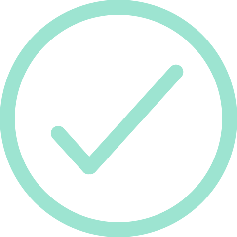
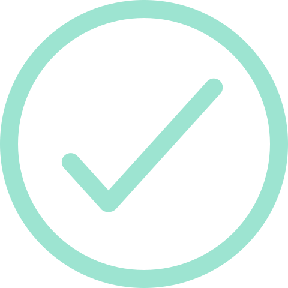

Laisser un pourboir n'a jamais été aussi simple !
 

Aujourd'hui je ne suis pas serveur mais je compte l'être demain, dois-je crée deux comptes ?
Aucun soucis, la fonctionnalité serveur peut être modifier à tout moment.